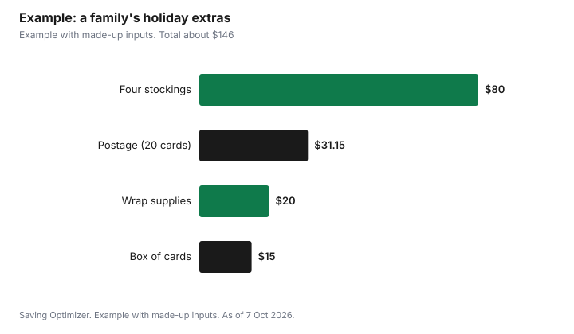

Events · Canada
Cards, Gift Wrap and Stocking Stuffers on a Budget: A Canadian Holiday Cost Guide

This post contains Amazon.ca affiliate links. If you buy through them, Saving Optimizer may earn a commission at no extra cost to you.
Cards, gift wrap and stocking stuffers quietly add up in a Canadian household's holiday spending because they are bought a few dollars at a time. The fix is to give them their own line in your December budget, set a per-stocking cap, and cut the costs that bring little joy. Buy stamps in booklets, where Canada Post charges $1.24 per stamp instead of $1.44 for a single domestic stamp. Send e-cards or a family photo by email to people you see often, and mail paper cards to those who value them. Reuse gift bags, wrap in kraft paper or fabric, and buy next year's wrap and tags in the clearance sales after 25 December.
Key takeaways
- Give cards, wrap and stuffers a separate budget line.
- Canada Post: $1.44 for a single domestic stamp, $1.24 each in a booklet.
- Mailing to the U.S. costs $1.75 and abroad $3.65 for a standard card up to 30 g.
- Reusable bags and plain kraft paper cut the wrap bill.
- Set a per-stocking cap and favour useful or edible items.
- Example with made-up inputs: a family's cards, wrap and stockings budget.
What it costs to mail a card
Canada Post prices standard cards by destination and weight. A normal card in an envelope is usually under 30 g, but thick cards, photo inserts or decorations can push it into a higher price band, and square or very large envelopes may count as non-standard.
| Destination and weight | Price |
|---|---|
| Canada, up to 30 g, single stamp | $1.44 |
| Canada, up to 30 g, in a booklet | $1.24 per stamp |
| Canada, over 30 g up to 50 g | $1.75 |
| Canada, non-standard or oversize up to 100 g | $2.61 |
| United States, up to 30 g | $1.75 |
| International, up to 30 g | $3.65 |
Buying a booklet instead of single stamps saves 20 cents per card within Canada. For holiday mailing dates, see Canada Post holiday deadlines.
Ways to spend less on cards
- Trim the list. Mail paper cards to people who value them, often older relatives, and send an email or message to the rest.
- Send one family photo card. A printed photo with a short note can replace a boxed card and a separate photo.
- Buy boxed cards after the holidays. Store them with the wrap for next year.
- Make cards with kids. Plain card stock and markers cost little and grandparents often prefer them.
- Keep it light. Skip inserts and decorations that push a card over 30 g.
- Hand-deliver locally to neighbours and friends you will see anyway.
Gift wrap: cheaper and less waste
- Reuse gift bags and tissue. Keep a box for bags, tissue and ribbon from this year.
- Plain kraft paper on a roll, such as this Bryco Goods kraft paper roll, wraps many gifts and can be decorated with string, stamps or kids' drawings.
- Fabric wrap. A scarf, tea towel or pillowcase can be part of the gift.
- Newspaper, flyers or old maps work for casual gifts.
- One style for everything. Buying one large roll is cheaper than several themed rolls.
- Skip the extras. Bows, ribbons and gift tags add cost; a marker on the paper works as a tag.
Before buying shiny or glittery paper, check what your local recycling program accepts. The City of Toronto's recycling page, for example, lists gift wrap, tissue paper and cards, but no ribbons or bows. It also notes that Circular Materials took over residential recycling on 1 January 2026, with changes to accepted materials, so look up the current rules for your area.
Stocking stuffers: set a cap per stocking
Stocking stuffers are where small purchases pile up. Pick a cap for each stocking before you shop, for example the same amount per person, and write it on your gift list next to the main gifts. Count stuffers in the gift budget, not as extras. Then shop with a list.
| Type | Ideas | Why it works |
|---|---|---|
| Useful | Socks, mitts, lip balm, toothbrush, phone cable, batteries | Gets used instead of thrown away |
| Edible | Clementines, chocolate, nuts, a favourite snack | A tradition that disappears by January |
| Activity | Cards, a puzzle book, craft kit, bath bombs | A low-cost way to fill the holidays |
| Experience | A movie voucher, a homemade coupon for a skating trip | Small cost, big memory |
| Practical for adults | A good pen, a reusable coffee cup, a gift card for a coffee | Things people use every week |
Dollar stores are useful for stuffers and wrap, but compare unit prices: Dollarama, for example, has sold items at price points up to $5.00 since 2022, so not everything is a dollar. Bulk packs of socks, lip balm (for example a Burt's Bees lip balm 3-pack) or snacks, split across several stockings, are often cheaper per item. Our kids' holiday gift budget and adult gift budget guides cover the main gifts.
A simple timeline for the season
- Early November: open last year's bin of bags, tissue, cards and tags, and write down what you have.
- Mid-November: finalize the card list, buy stamp booklets, and set the per-stocking cap in your December spending plan.
- Late November: buy stuffers from your list during regular shopping trips, comparing unit prices, and keep receipts in one envelope.
- Early December: write and mail international cards first, then U.S., then Canadian cards, following Canada Post's holiday dates.
- Mid-December: wrap gifts as they arrive rather than all on one night, so you use what you have instead of buying more in a rush.
- After 25 December: save bags and tissue, note what ran out, and buy only those items on clearance.
Spreading the work out keeps the extras from turning into last-minute purchases at full price. It also helps you notice when a stocking is already full, so you stop buying. If you share stockings with extended family, agree on the cap together so no one feels they have to match a bigger stocking.
Buy next year's supplies after the holidays
Wrap, tags, boxed cards and some stocking items go on clearance after 25 December, along with other holiday decorations. Buy only what you will use next year, store it in one labelled bin with the reusable bags, and write a note of what you have so you do not buy duplicates next November.
Example with made-up inputs
These numbers are an example with made-up inputs. A family of four plans its extras. Cards: 15 cards in Canada from two booklets of stamps (15 x $1.24 = $18.60), 3 to the U.S. ($5.25) and 2 overseas ($7.30), plus a $15 box of cards. Wrap: one $12 kraft paper roll and $8 of tape and string, reusing last year's bags. Stockings: a $20 cap for each of four stockings ($80). Total: about $146. Without a plan, the same family might buy single stamps, three themed rolls of wrap, bows and tags, and stuffers without a cap, and spend far more.
| Item | Cost |
|---|---|
| 15 cards in Canada, booklet stamps | $18.60 |
| 3 cards to the U.S. | $5.25 |
| 2 cards overseas | $7.30 |
| Box of cards | $15.00 |
| Kraft paper, tape and string | $20.00 |
| Four stockings at $20 each | $80.00 |
| Total | $146.15 |

Common mistakes
- Buying single stamps one at a time instead of a booklet.
- Buying new wrap every year while last year's bags sit in a closet.
- Filling stockings with novelty items that are thrown out by January.
- Forgetting cards, wrap and stuffers in the December budget.
- Mailing international cards too late for the holiday.
Related: December spending plan and holiday tipping.
Sources
- Canada Post, Stamp prices (Canada, U.S. and international; booklet price; taxes extra), canadapost-postescanada.ca, as of 7 Oct 2026.
- City of Toronto, Toronto's Recycling Program (gift wrap, tissue paper and cards, no ribbons or bows; Circular Materials from 1 Jan 2026), toronto.ca, page modified 30 Jul 2026, as of 7 Oct 2026.
- Dollarama, About us (price points up to $5.00 introduced in 2022), dollarama.com, as of 7 Oct 2026.
- Card counts, wrap prices and stocking caps in the worked example are made-up inputs.
Frequently asked questions
How much is a stamp for a Christmas card in Canada?
Canada Post charges $1.44 for a single stamp or $1.24 per stamp in a booklet for a standard card within Canada up to 30 g, taxes extra, as of 7 Oct 2026.
How much does it cost to mail a card to the U.S. from Canada?
A standard card up to 30 g costs $1.75 to the United States and $3.65 to other international destinations, taxes extra.
Can gift wrap go in the recycling?
It depends on your area. Toronto's recycling page lists gift wrap, tissue paper and cards but not ribbons or bows, and notes changes since Circular Materials took over on 1 Jan 2026. Check your local rules.
How much should I spend on stocking stuffers?
Set a fixed cap per stocking that fits your overall gift budget, and count stuffers as part of the gift budget rather than as extras.
What are good cheap stocking stuffers?
Useful items such as socks, mitts, lip balm and phone cables, edible treats like clementines and chocolate, and small activities such as cards or puzzle books.
When is the best time to buy gift wrap?
After 25 December, when wrap, tags and boxed cards often go on clearance. Buy only what you will use next year.
Researched and drafted with AI assistance and fact-checked against official Canadian sources. How we create content.
Disclosure: This page contains Amazon.ca affiliate links. As an Amazon Associate, Saving Optimizer earns from qualifying purchases. Education only.